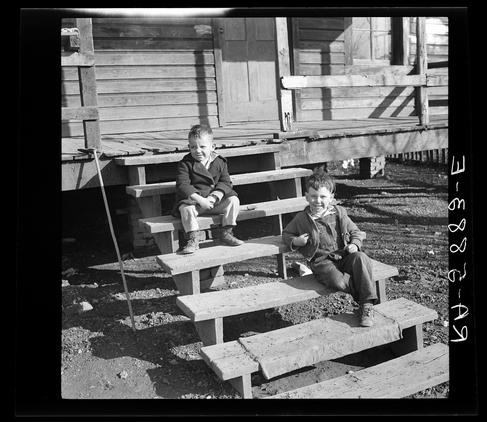

After the coal


Seventy years is a lot to put in one chapter, and it belongs in one because the three towns spent it going three different directions. Cardiff emptied. It had counted 562 people in 1900 and counted 146 in 1930, because underground mining was going out and strip mining did not need a town around it. Graysville did the opposite, and did it on purpose. It reincorporated on 17 November 1945 mainly so it could build and run its own water system, held its first council meeting in the old schoolhouse that January, set up a gas board in 1949 that is the Municipal Gas System today, and built a town hall, a jail, and a fire station across the 1950s. Mines and steel mills were drawing families in from all over Alabama, so Graysville laid out its first subdivisions to hold them, and the 1960 census found 2,870 people there, more than any count before or since. Through the 1980s and 1990s it kept growing by annexing unincorporated county land, which is why it covers 16.07 square miles now, about seventy six times the size of Cardiff. Brookside did neither of those things. It put up a city hall in 1953 and reached its own highest count, 1,409 people, in 1980, sixty years after the mine closed.
What happened, and when
—- 1930CardiffPeople
From 562 people down to 146
Cardiff counted 562 in 1900 and 146 in 1930. Underground mining was going out, and strip mining did not need a town around it.
- November 17, 1945GraysvilleGovernment
Back on the map, for the water
Graysville reincorporated on November 17, 1945, mainly so it could build and run its own water system.
- January 16, 1946GraysvilleGovernment
The first council meets in the old schoolhouse
The new council held its first meeting on January 16, 1946, in the old schoolhouse.
- 1949GraysvilleGovernment
Then the gas board
Graysville set up a gas board in 1949. It is the Municipal Gas System now.
- 1953BrooksideGovernment
Brookside builds a city hall
Brookside put up its city hall in 1953.
- The 1950sGraysvilleGovernment
A town hall, a jail, and a fire station
Graysville built all three across the 1950s.
- The 1950s and 1960sGraysvilleTown life
The subdivisions go in
Mines and steel mills drew families from all over Alabama, and Graysville laid out its first subdivisions to hold them.
- 1960GraysvillePeople
Graysville peaks at 2,870
The 1960 census found 2,870 people in Graysville, more than any count before or since. Families had moved in for work in the mines and the steel mills.
- 1980BrooksidePeople
Brookside peaks at 1,409
Brookside's highest count came in 1980, sixty years after the mine closed.
- The 1980s and 1990sGraysvilleGovernment
It grew by annexing the county
Graysville took in unincorporated county land through the 1980s and 1990s. It covers 16.07 square miles now, about seventy six times the size of Cardiff.
Every entry above carries the source it came from, and these are those sources in full. All of it is public material found online, so anything here can be followed back and checked. It also means that where this chapter says something is not recorded, what that really says is that it has not turned up in any of these, which is a smaller claim. If you know better, and somebody reading this probably does, it would be good to hear from you.
Fill in a gap
If you have a photograph, a date, a name, or a story about any of the three towns, send it. Corrections are just as welcome as additions, and this page gets better every time somebody who was there writes in.
fivemilec@gmail.com